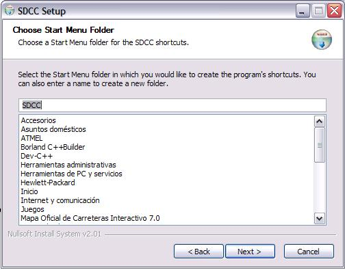
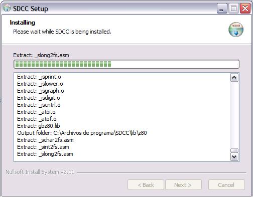

|
Taller de Robótica CampusBot 2005. SESION 3. Instalación del Compilador SDCC |
En este capítulo Instalaremos el compilador SDCC.
Para la instalacion de dicho software necesitaremos descargarlo de la pagina http://sdcc.sourceforge.net/
Una vez allí nos descargaremos la versión más actual que la encontraremos a la izquierda de la pagina en la sección “Snapshots”, donde pone “Windows”. Pinchamos allí, lo que nos traslada a la misma página pero un poco más abajo. Entonces descargamos el archivo mas actualizado del compilador sdcc 20050715 setup.exe
Para comenzar la instalación ejecutaremos el archivo SDCC-2.5.0SETUP.EXE, desde la ubiación donde lo hayais descargado, con lo que se nos abrirá la siguiente ventana:
Pulsamos el botón “Next” y nos aparece la siguiente ventana:

Pinchamos en la botón “I Agree” . Y esta es la ventana siguiente:

Volvemos a Pulsar “Next” tras verificar el nombre que queremos ponerle al grupo de carpetas para el compilador.

Ahora decidimosque tipo de instalación queremos hacer. Si queremos cambiar la que figura por defecto, pulsaremos en el botón desplegable donde elegiremos entre las opciones Full, Medium y Compact o Custom, nosotros elegiremos la que viene por defecto “Full” y así seleccionaremos todas las librerias que trae el compiador.Tras pulsar “Next”, tenemos:

Ahora podemos elegir la ruta de instalación. Nosotros hemos dejado la que viene por defecto, y pulsamos ”Install”.


Inmediatamente comenzará la descompresion e instalación del compilador, al finalizar nos pedirála confirmación para añadir la ruta de instalación al PATH del compilador. Pulsamos “Sí”.

Con esto hemos finalizado la instalación. Tras pulsar el botón “Finish” completamos el proceso. Importante recodar que el compilador no crea un icono de acceso directo ni nada por el estilo. Sin embargo podemos acceder a determinadas opciones de configuración así como un acceso para desinstalarlo a traves de la ruta Inicio -> Programas ->SDCC.